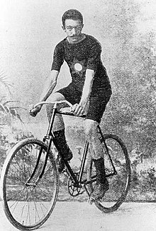
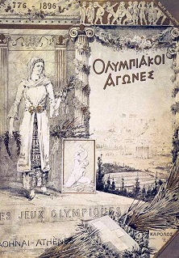
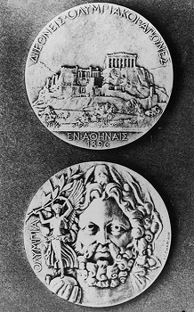
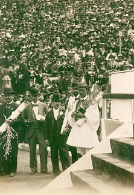
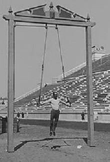
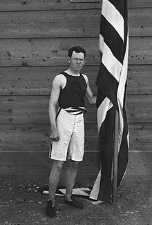

Aristidis Konstantinidis (em grego: Αριστείδης Κωνσταντινίδης) venceu a primeira prova olímpica de estrada.Vencendo a corrida, percorrendo 87 km de Atenas a Maratona e para trás em um tempo de 3:22:31, apesar de ter caído três vezes. Ele acabou completando a corrida na bicicleta de um marcapasso, pois seu próprio passeio havia sido danificado. Konstantinidis também era mecânico de bicicletas e foi co-fundador da Associação de Ciclismo de Atenas.
Aristidis Konstantinidis






Foto de Aristidis Konstantinidis
Capa do relatório Atenas 1896
Medalha do jogos olimpicos 1896
Cerimonia de inicio dos jogos
Disputa nos jogos olimpicos 1896
O primeiro campeão olimpico